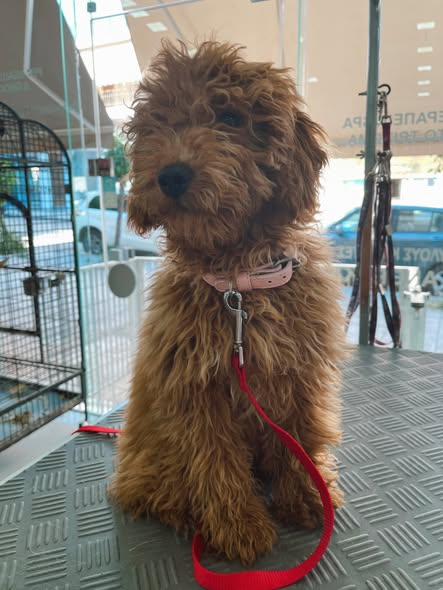
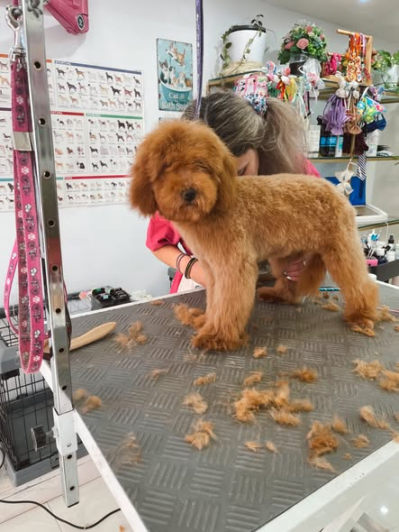
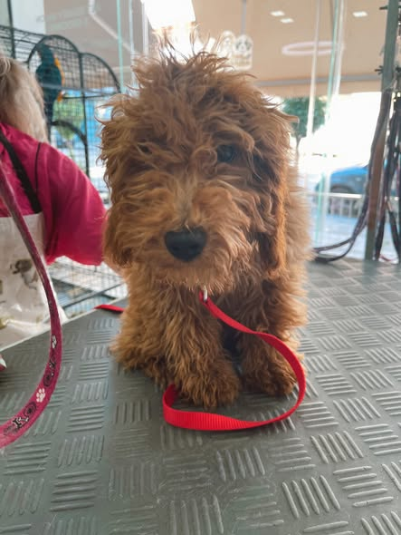

Μία ακόμη φωτογραφία από την ίδια ανάρτηση

Σκύλος · Σγουρό τρίχωμα
Μια μικρή αλλαγή.
Πολύς χαρακτήρας.
Το μακρύ, σγουρό τρίχωμα δίνει τη θέση του σε ένα πιο κοντό κούρεμα στο σώμα, με στρογγυλεμένο σχήμα γύρω από το πρόσωπο.
Δύο στιγμές από την ίδια δημοσίευση του atelier, για να δείτε την αλλαγή στο look.
Το ίδιο βλέμμα.
Μια καινούργια εμφάνιση.